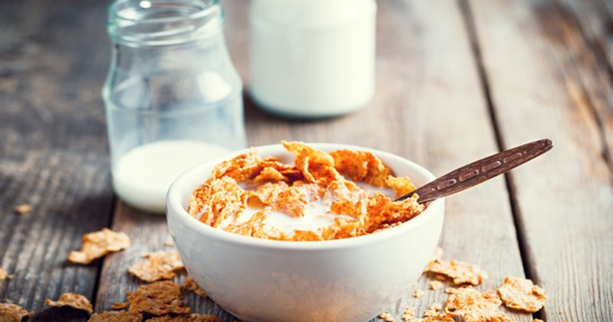

Home
Milk and Cereal

Description
Are you sure you know how to cook properly your favorite breakfast?
Ingredients
- 1 cup of your favorite cereal
- ½ to 1 cup of milk
Steps
- FIRST OF ALL: Pour the cereal into a bowl.
- THEN: Add the milk slowly until the cereal is partially or fully submerged.